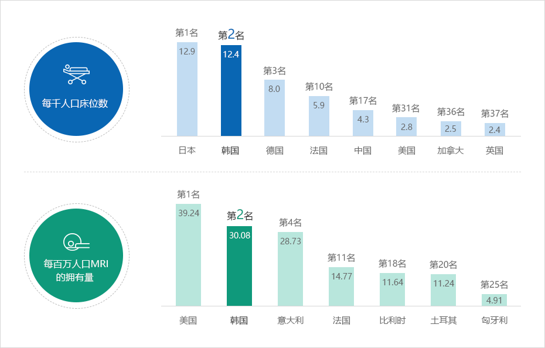
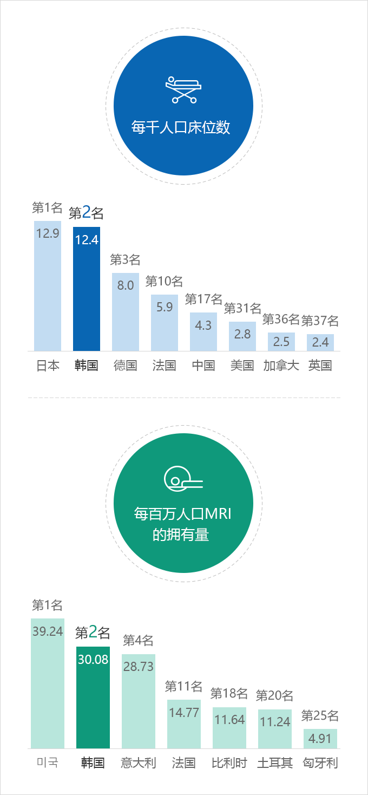

医疗
- Home
- Why KOREA
- 基础设施
- 医疗
打造医疗枢纽城市
韩国的每千人口病床数为12.4张，位列世界第二。其健康护理和医疗服务水平冠绝全球，在医疗及生物技术领域拥有健康、充满活力的生态系统。



每千人口床位数 : 第1名 日本 12.9, 第2名 韩国 12.4, 第3名 德国 8.0, 第10名 法国 5.9, 第17名 中国 4.3, 第31名 美国 2.8, 第36名 加拿大 2.5, 第37名 英国 2.4
每百万人口MRI的拥有量 : 第1名 美国 39.24, 第2名 韩国 30.08, 第4名 意大利 28.73, 第11名 法国 14.77, 第18名 比利时 11.64, 第20名 土耳其 11.24, 第25名 匈牙利 4.91

※ 出处 : OECD (2020)